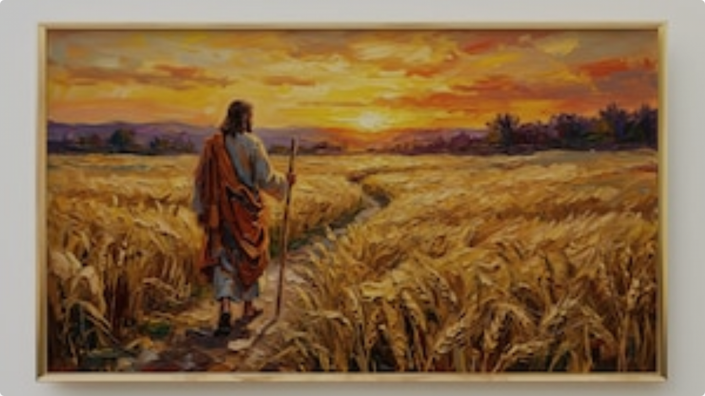
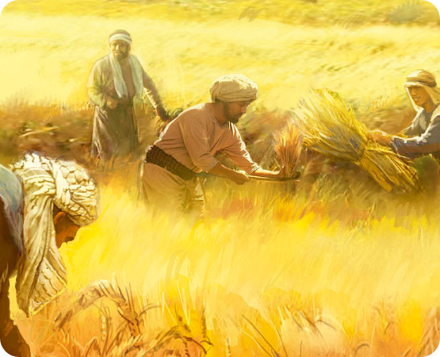
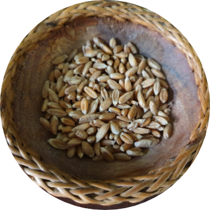
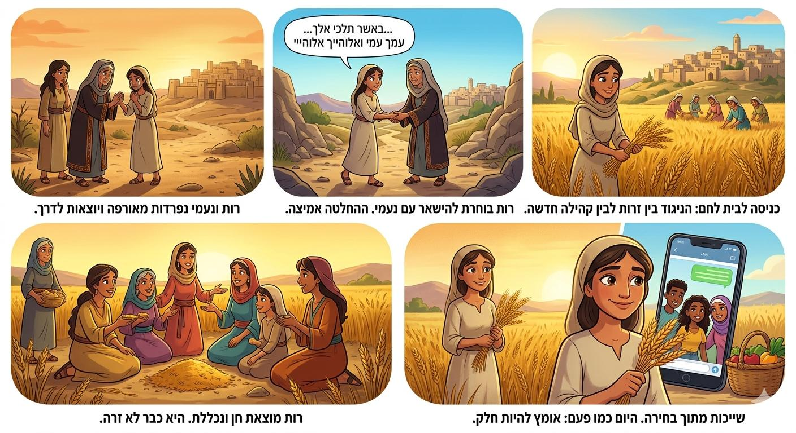
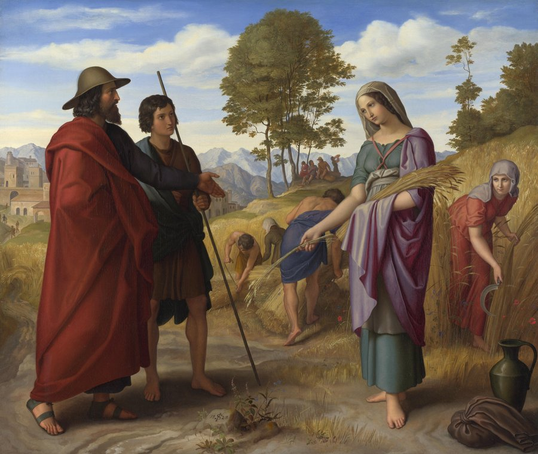
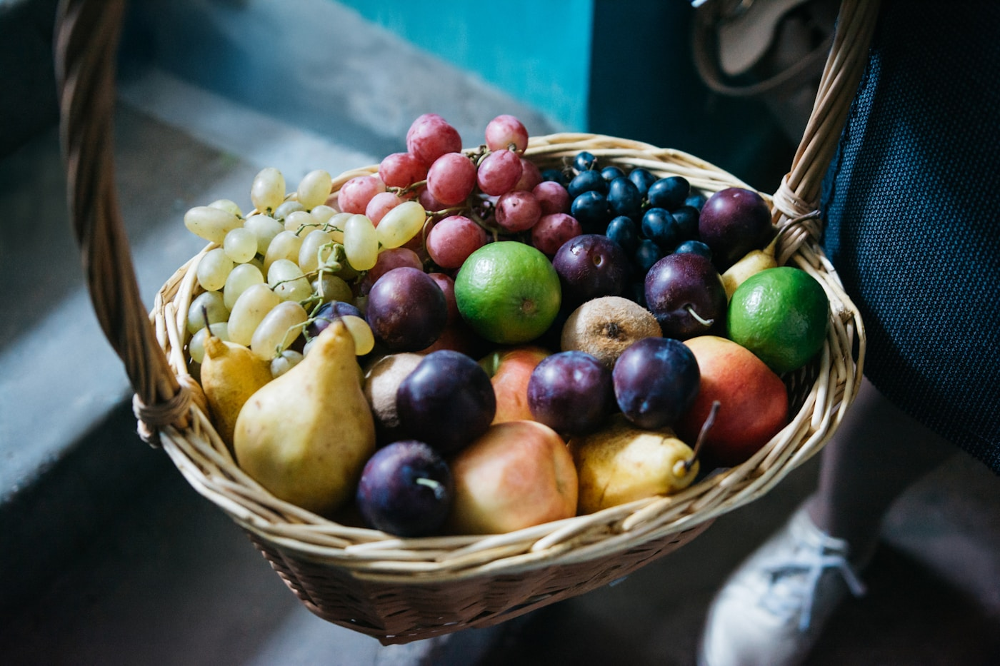

.png)

למה רוב האנשים
טועים בכוונה?
יוכי בנבנישתי
ניסוי אש — ההוכחה המדעית
מה שקורה כשהלחץ החברתי מנצח את העיניים שלנו
כשכולם בחדר (שחקנים מוסכמים) טענו שהתשובה הלא נכונה היא נכונה — הם נכנעו ללחץ
מהי התקרנפות?
הגדרה
תהליך שבו אדם או קבוצה מאבדים את ערכיהם ובוחרים להתיישר לפי הרוב מתוך פחד או נוחות.
במילים פשוטות
זה להפוך לחלק מהעדר, להרכין ראש ולהפסיק להשמיע קול ביקורתי — גם אם הזרם הזה טועה או עושה עוול.
🦏 אל תהיו חלק מהעדר!
האומץ להסתובב
"אל תהיו הקרנפים שדוהרים בעיוורון."
"תהיו אלו שמעזים
לעצור לרגע
ולחשוב אחרת"
מגילת רות
סיפור של אומץ, נאמנות וחסד
בשל רעב כבד ביהודה, משפחתו של אלימלך עוזבת את בית לחם ועוברת לגור בשדה מואב. המשפחה כוללת את אלימלך, נעמי ושני בניהם — מחלון וכליון.
האובדן
אלימלך נפטר, ולאחר עשר שנים גם שני הבנים מתים במואב.
הבדידות
נעמי נותרת לבדה עם שתי כלותיה המואביות, רות וערפה.
נעמי מבקשת מכלותיה לחזור לביתן. ערפה נפרדת, אך רות דבקה בה בנאמנות מוחלטת:
שתי הנשים מגיעות לעיר בדיוק בתחילת קציר השעורים. העיר כולה רועשת מהגעתן.

רות יוצאת ללקט שיבולים כדי לפרנס את נעמי. היא מגיעה במקרה לשדהו של בועז, קרוב משפחה של אלימלך.
בועז מתרשם עמוקות מהחסד שעשתה עם חמותה ומגן עליה.

בועז גואל את נחלת אלימלך ונושא את רות לאישה.
לזוג נולד בן בשם עובד — אבי ישי, אבי דוד המלך.

"עולם חסד יבנה"
מגילת רות מלמדת אותנו שמעשה אחד של נאמנות וחסד יכול לשנות גורל של משפחה — ואפילו של עם שלם.

שייכות מתוך בחירה
רות הייתה מואבייה — היא בחרה להצטרף לעם אחר
היא יכלה לחזור למשפחתה ולחיים הנוחים
היא בחרה להישאר עם נעמי ולעשות חסד

גם הפגיעה נשארת.
פעם מילה הייתה נאמרת — ונעלמת.
היום צילום מסך, תגובה וסרטון — נשארים לתמיד.
האם פעם צחקתי רק כי כולם צחקו?
האם שתקתי למרות שידעתי שמשהו לא בסדר?
האם הייתי רוצה שיתייחסו אליי ככה?
איזה אדם אני רוצה להיות גם כשכולם מסתכלים?
מי שפוגע
מי שנפגע
מי שראה ושתק
כאן נמצא הכוח הגדול ביותר לשינוי
הבחירה שלנו
רות נזכרת עד היום לא בגלל שהיא הלכה אחרי כולם — אלא בגלל שהיא ידעה לבחור נכון גם כשזה היה קשה.
חג שבועות
שמח!
שנדע תמיד לבחור בשייכות של חסד,
של עשיית טוב ושל אומץ לבחור נכון.

תודה על ההקשבה
יוכי בנבנישתי